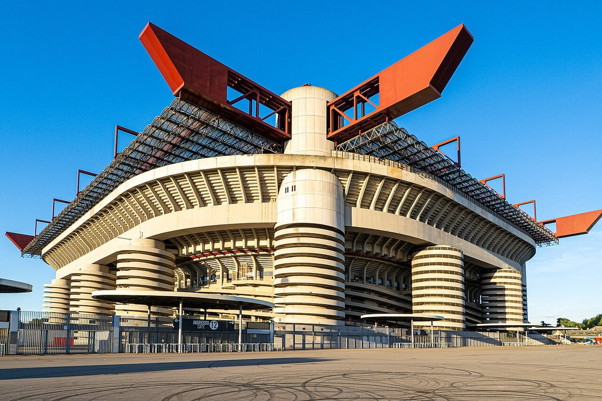

皮奥·埃斯波西托梅开二度 意大利3比1逆转法国 齐达内迎来执教首败
意大利在圣西罗球场逆转取胜，凭借相互交锋成绩升至欧国联A1组榜首，小组赛还剩最后一轮。

赛事经过
2026年11月12日星期四，在米兰圣西罗球场进行的欧国联比赛中，意大利在先失一球的情况下以3比1逆转法国。这是齐达内执教法国队以来的首场失利。
第10分钟，意大利门将多纳鲁马传球失误，直接送给奥利塞，后者过掉一名防守球员后破门，这是他在五场欧国联比赛中的第五个进球。第26分钟，坎比亚吉突入底线回传，弗朗切斯科·皮奥·埃斯波西托破门扳平。

第60分钟左右，坎比亚吉被古斯托放倒，塞巴斯蒂亚诺·埃斯波西托主罚点球未进。三分钟后，替补登场的迪马尔科传中，弗拉泰西射门得手，意大利反超。随后维尔加拉被于帕梅卡诺绊倒，皮奥·埃斯波西托主罚点球命中，锁定胜局。法国队巴尔科拉和谢尔基两次击中门柱。
焦点所在
这场失利终结了齐达内执教法国队后的不败开局，也让曼奇尼执教的意大利队取得了自1962年以来首次在主场战胜法国。法国队姆巴佩和登贝莱因伤缺阵，拉比奥首次担任队长。
关键数据与事实

- 比分： 意大利 3比1 法国（半场1比1）。
- 进球： 奥利塞 第10分钟（法国）；皮奥·埃斯波西托 第26分钟及点球、弗拉泰西（意大利）。
- A1组： 意大利10分，法国10分，比利时9分；意大利凭相互交锋占据榜首。土耳其五连败垫底。
- 意大利： 近四场比赛保持不败。
下一步
小组赛最后一轮将于周日进行，比利时对阵意大利、土耳其对阵法国，届时将决定最终排名。